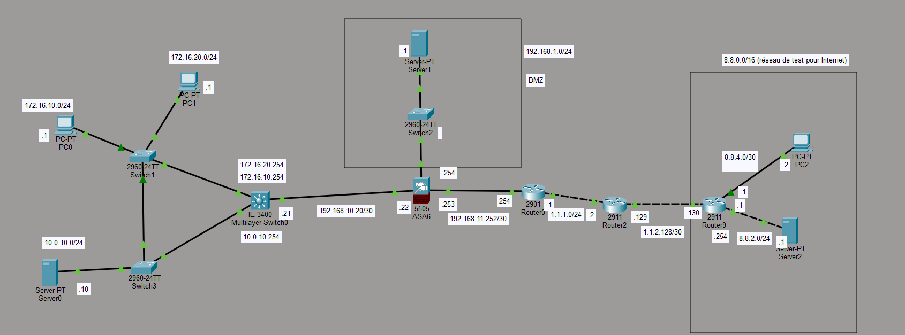

Projet réalisé dans le cadre du BUT Réseaux & Télécommunications.

Dans le cadre de la SAÉ 21, j'ai conçu et mis en œuvre l'infrastructure réseau complète d'une PME fictive à l'aide de Cisco Packet Tracer. L'objectif était de construire un réseau d'entreprise fonctionnel intégrant la commutation, le routage, les services réseau essentiels et plusieurs mécanismes de sécurité. Ce projet m'a permis de découvrir les différentes étapes de conception d'une architecture réseau professionnelle, depuis le plan d'adressage jusqu'à l'accès sécurisé à Internet.
J'ai appris à concevoir un plan d'adressage cohérent, à segmenter un réseau à l'aide de VLANs et à mettre en œuvre des services indispensables comme DHCP et DNS. J'ai également découvert les bases de la sécurisation d'un réseau avec un pare-feu et une DMZ. Ce projet a renforcé ma maîtrise des équipements Cisco ainsi que ma capacité à analyser et résoudre des problèmes réseau complexes.